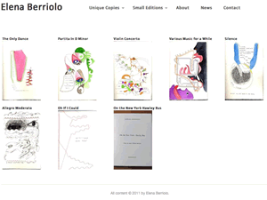

Uno is one-column photoblogging theme for the Base Theme Framework for WordPress. You must have Base installed in your themes directory for Uno to work. The theme design was developed with users who appreciate visual browsing and prefer a minimal layout, with their photos featured front and center. This theme validates as Strict XHTML and has been tested on Chrome, Firefox 3.6+, Safari 4.0+, Opera 10+, IE8, and IE7
Note: Here's a related video about installing Modularity, another theme by Graph Paper Press
If you've performed a clean install of Uno and are having problems, make sure that the following conditions have been met:
If you are migrating from an old theme to a new theme and your thumbnails look squished or distorted, you might need to re-upload the image you plan on using for the post thumbnail. This is because WordPress creates your image sizes based on the dimensions you specified above. Old thumbnails will not be automatically resized. You can also regenerate your thumbnails so that your old uploaded media have the new settings applied to it.
By default, thumbnails are auto cropped by WordPress. This theme checks first to see if you have added the URL to your preferred thumbnail to custom field called, you guessed it, thumbnail. If not, the theme will defer to the first photo that you uploaded using WordPress' Add Photo icon. If you haven't uploaded a photo using the Add Photo icon, the theme will can the post body for an image, and use it. If no photo exists in the post body, the theme will use a default image. As you can see, this series of "checks" allow you to have 100% control over your post thumbnails.
This theme uses WordPress' Menu feature for configuring your site navigational menu. To configure your menu, visit the Appearance -> Menu tab on your WordPress dashboard. Here is a video tutorial.
This theme relies on categories for changing the design of each post. Thus, it's best to NOT assign posts to more than one category at a time. Otherwise, navigating between posts can take users from a Gallery post directly into a Blog post, thus interrupting the flow between Galleries. Assign each post to one category and you will be good to go.
To add a gallery to a post, simply upload images into the Post using WordPress' Add Media tool. DO NOT insert the gallery into the post. Uno automatically pulls the images uploaded into the Post onto the page. The single post template automatically extracts all images uploaded into a post. To remove an image from the slideshow, simply delete or unattach that specific image from the post.
By default the slideshow is 600 pixels tall. We define the exact height of the slideshow so your website doesn't jump around vertically. To increase the slideshow height to, say, 700 pixels tall, just add this CSS snippet to your Custom CSS panel:
.maincontent {height: 700px;}
This theme comes packaged with a Page template for displaying a list of all Posts, regardless of category. To create this Blog page, create a Page called Blog and assign it to the Blog page template (located to the right underneath the Page Attributes section. If the Page Attributes section is not visible, you can click the isn't visible, toggle the Screen Options tab located in the upper right and check the Page Attributes checkbox.)
This theme can use any font from the Google Font Directory. The demo site uses the Reenie+Beanie font.
This theme uses jQuery javascript to do lots of fancy stuff. If your theme looks broken, than you likely have a plugin that uses a conflicting javascript library. Deactivate your plugins, one-by-one, to determine which plugin is conflicting with jQuery.
Still having trouble? Consider becoming a member of Graph Paper Press so you can get access to our private, well-groomed support forum, tutorials, and additional themes.
There are a few things to know that you can and cannot do with this theme:
This theme was created for by us for you. Contact us for inquiries, comments, or suggestions